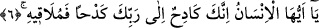

gelmektedir. Söz gelimi bir kimse cömertlikte ve merhamette olanca gücünü
harcadığında yukardaki aynı kalıp kullanılır. Şu halde yeryüzü ve gökyüzü kendi tabiat
ve karakterlerinin üzerinde bir çaba harcayacaklardır.
“Ve Rabbini dinleyip boyun eğecek hale getirildiği zaman” yâni yeryüzü Allah
Teâlâ’ya içinde bulunanları dışarı atma ve tamamen boşaltma noktasında tam olarak
boyun eğmiş ve boyun eğmeye uygun hale getirilmiştir. Bir başka ifâdeyle yeryüzünün
Rabbânî kudret karşısındaki durumu budur. Dikkat edileceği üzere bu sûrenin baş
tarafında iki âyette “boyun eğecek hale getirildiği zaman” ifâdesi kullanılıyor. Bu ifâde
âyetin edebî seviyesini düşürecek lüzumsuz bir tekrar değildir. Çünkü birincisi gökle
ilgili ikincisi ise yeryüzü ile ilgilidir. Her birine diğerine âid olmayan bir özellik
eklendiğine göre buradaki ifâde bir tekrar sayılmaz.
Yukardan beri sıralanan bütün olaylar meydana geldiği zaman insanın beyândan âciz
kalacağı çok korkunç şeyler olacaktır.
Kâşifî Tefsîri’nde “izâ”nın cevabının “insan sevabı ve cezâyı görür, müşâhede eder”
şeklinde olduğu kaydedilmektedir.
Âyet-i kerimede hayvâni ruh semasının insâni ruhtan ayrılacağına ve bu semanın zail
olacağına, beden arzının içinden ruhun çekilip alınmasıyla yayılacağına, bu beden
arzının içinde bulunan ruhu, kuvvetleri dışarı atacağına, içerisinde bulunan hayata,
mizaca, terkibe ve şekle dâir bütün izleri ve arazı boşaltacağına, bedenin ruhtan hali
olmasına tabi olarak bütün bunları dışarı atacağına işâretler vardır.
et-Te’vilâtü’n-Necmiyye’de ise bu âyetten şu işâretler alınıyor: Burada ruh semâsının
yarılacağına, nefs-i emmare bulutu zulmetinden semanın kurtularak Rabbinin feyzine
boyun eğeceğine, Allah Teâlâ’nın orada tasarruf etmesiyle hiçbir karşı gelme ve yüz
çevirme olmaksızın gerekli istidadı hazırlayarak boyun eğmeyi sağlayacağına, beşeri
nefislerin arzını erbabına yayacağına ve bu arzın beşeri ahkamdan boşalacağına
işâretler vardır.
6. Ey insan! Şüphe yok ki sen Rabbine karşı çaba üstüne çaba göstermektesin;
sonunda O’na varacaksın.
“Ey insan!” Âyette geçen “insan” kelimesi mü’min, kâfir, isyânkâr bütün insan
cinsine şâmildir. Şu halde buradaki “ey insan” hitabı bedel itibariyle bütün mükelleflere
genel bir hitaptır. Âlimlerin ifâdesine göre bu “ey insan” ifâdesi genelleme ifâde eden
ifâdelerden daha etkindir. Çünkü bu, hitap bakımından her muhataba ayrı ayrı hitap
ediliyormuş mesâbesindedir. Bir başka ifâdeyle muhataplardan her birine ayrı ayrı
sanki “ey filanca, sen ey filanca, sen ey filanca” gibi teker teker hitap edilmiş
olmaktadır.